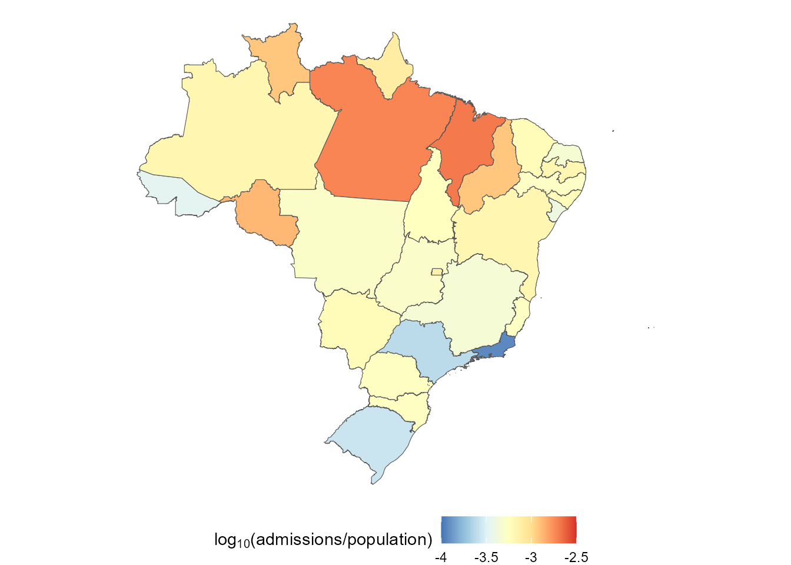
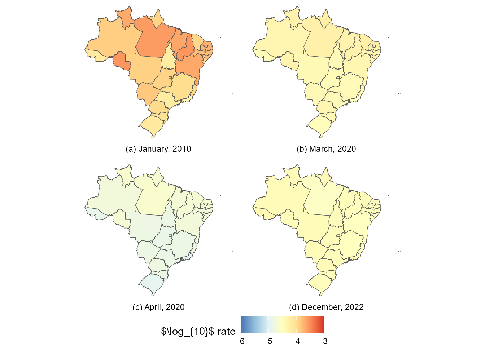

Space-time model hospital admissions from gastroenteritis
Source:vignettes/example1.Rmd
example1.RmdTable of contents
-
Creating the model structure: >
- A structure for polynomial trend models
- A structure for dynamic regression models
- A structure for harmonic trend models
- A structure for autoregresive models
- A structure for overdispersed models
- Handling multiple structural blocks
- Handling multiple linear predictors
- Handling unknown components in the planning matrix \(F_t\)
- Special priors
-
Advanced examples:>
Applied example: Space-time model for hospital admissions from gastroenteritis
In this example we model number of hospital admissions from
gastroenteritis in Brazil from 2010 to 2022 (Ministry of Health, Brazil, 2023).
The kDGLM package provides the gatroBR
dataset with the pertinent data for our models, which includes:
- UF: The abbreviated state name.
- Date: The date of the observation. Note that the day is only a placeholder, as we are dealing with monthly reports.
- Admissions: The number hospital admissions that were reported in that combination of state and date.
- Population: The estimated population in that combination of state and date (to be used as a offset).
Supplementary information can be found in the documentation (see
help(gastroBR))).
Initial model: Total hospital admissions
We start the analysis with a model for the total number of hospital admissions over time in Brazil, i.e., a temporal model that does not consider the hospital admissions on each state.
From the figure above we can see that there is a consistent trend of (log) linear decay of the rate of hospital admissions over time, until April of 2020, when there is an abrupt reduction of hospital admission due to the pandemic of COVID-19 (Ribeiro et al., 2022), which is then followed by what seems to be a return to the previous level, although more observations would be necessary to be sure. We can also note that the data has a clear seasonal pattern, with a period of \(12\) months.
We begin with a very simply model. Let \(Y_t\) be the total number of hospital admissions on Brazil at time \(t\). Assume that:
\[ \begin{aligned} Y_t|\eta_t &\sim Poisson(\eta_t)\\ \ln{\eta_t}&=\lambda_t=\theta_{1,t}\\ \theta_{1,t}&=\theta_{1,t-1}+\theta_{2,t-1}+\omega_{1,t}\\ \theta_{2,t}&=\theta_{2,t-1}+\omega_{2,t}.\\ \end{aligned} \]
First we define the model structure:
structure <- polynomial_block(
rate = 1, order = 2, D = c(0.95, 0.975),
name = "Trend"
)Then we define the outcome:
outcome <- Poisson(
lambda = "rate",
data = data.year$Admissions,
offset = data.year$Population
)Then we fit the model:
fitted.model <- fit_model(structure, outcome)Finally, we can see how our model performed with the and methods:
summary(fitted.model)Fitted DGLM with 1 outcomes.
distributions:
Series.1: Poisson
---
No static coeficients.
---
See the coef.fitted_dlm for the coeficients with temporal dynamic.
One-step-ahead prediction
Log-likelihood : -24560.92
Interval Score : 52492.80142
Mean Abs. Scaled Error: 1.41602
---
plot(fitted.model, plot.pkg = "base")
Clearly the model described above is too simple to describe the data. In particular, it does not take into account any form of seasonal pattern. Let us proceed then by assuming the following model:
\[ \begin{aligned} Y_t|\eta_t &\sim Poisson(\eta_t)\\ \ln{\eta_t}&=\lambda_t=\theta_{1,t}+\theta_{3,t}\\ \theta_{1,t}&=\theta_{1,t-1}+\theta_{2,t-1}+\omega_{1,t}\\ \theta_{2,t}&=\theta_{2,t-1}+\omega_{2,t},\\ \begin{bmatrix}\theta_{3,t}\\\theta_{4,t}\end{bmatrix}&=R\begin{bmatrix}\theta_{3,t}\\\theta_{4,t}\end{bmatrix}+\begin{bmatrix}\omega_{3,t}\\\omega_{4,t}\end{bmatrix}\\ R&=\begin{bmatrix} \cos(\frac{2\pi}{12}) &\sin(\frac{2\pi}{12})\\ -\sin(\frac{2\pi}{12}) & \cos(\frac{2\pi}{12})\end{bmatrix} \end{aligned} \]
Where \(R\) is a rotation matrix with angle \(\frac{2\pi}{12}\), such that \(R^{12}\) is equal to the identity matrix.
To define the structure of that model we can use the
harmonic_block function alongside the
polynomial_block function:
structure <- polynomial_block(
rate = 1, order = 2, D = c(0.95, 0.975),
name = "Trend"
) +
harmonic_block(
rate = 1, period = 12, D = 0.98,
name = "Season"
)Then we fit the model (using the previously defined outcome):
fitted.model <- fit_model(structure, outcome)
summary(fitted.model)Fitted DGLM with 1 outcomes.
distributions:
Series.1: Poisson
---
No static coeficients.
---
See the coef.fitted_dlm for the coeficients with temporal dynamic.
One-step-ahead prediction
Log-likelihood : -17339.1
Interval Score : 41481.46809
Mean Abs. Scaled Error: 0.70882
---
plot(fitted.model, plot.pkg = "base")
Notice that this change significantly improves all metrics provided by the model summary, which indicates that we are going in the right direction. We encourage the reader to test different orders for the harmonic block.
The previous model could capture the mean behavior of the series reasonably well. However, two deficiencies of that model standout: first, the overconfidence in the predictions, evidenced by the particularly thin credibility interval; nnd second, the difficulty the model had to adapt to the pandemic period.
The first problem comes from the fact that we are using a Poisson model, which implies that \(Var[Y_t|\eta_t]=\mathbb{E}[Y_t|\eta_t]\), which means that \(Var[Y_t]=\mathbb{E}[Var[Y_t|\eta_t]]+Var[\mathbb{E}[Y_t|\eta_t]]=\mathbb{E}[\eta_t]+Var[\eta_t]\). For latter observations we expect \(Var[\eta_t]\) to be relatively small; as such, the variance of \(Y_t\) should be very close to its mean after a reasonable amount of observations. In this scenario, the coefficient of variation, defined as \(\frac{\sqrt{Var[Y_t]}}{\mathbb{E}[Y_t]}\) goes to \(0\) as \(\mathbb{E}[Y_t]\) grows, in particular, for data in the scale we are working with in this particular problem, we would expect a very low coefficient of variation if the Poisson model were adequate, but that is not what we observe. This phenomena is called and is a well known problem in literature . To solve it, we can include a block representing a white noise that is added to the linear predictor at each time, but does not affect previous or future observation, so as to capture the overdipersion. In this case, we will assume the following model:
\[ \begin{aligned} Y_t|\eta_t &\sim Poisson(\eta_t)\\ \ln{\eta_t}&=\lambda_t=\theta_{1,t}+\theta_{3,t}+\epsilon_t\\ \theta_{1,t}&=\theta_{1,t-1}+\theta_{2,t-1}+\omega_{1,t}\\ \theta_{2,t}&=\theta_{2,t-1}+\omega_{2,t},\\ \begin{bmatrix}\theta_{3,t}\\\theta_{4,t}\end{bmatrix}&=R\begin{bmatrix}\theta_{3,t}\\\theta_{4,t}\end{bmatrix}+\begin{bmatrix}\omega_{3,t}\\\omega_{4,t}\end{bmatrix}\\ \epsilon_t & \sim \mathcal{N}(0,\sigma_t^2) \end{aligned} \]
This structure can be defined using the function, alongside the previously used functions:
structure <- polynomial_block(
rate = 1, order = 2, D = c(0.95, 0.975),
name = "Trend"
) +
harmonic_block(
rate = 1, period = 12, D = 0.98,
name = "Season"
) +
noise_block(rate = 1, name = "Noise")For the second problem, that of slow adaptation after the start of the pandemic. The ideal approach would be to make an intervention, increasing the uncertainty about the latent states at the beginning of the pandemic period and allowing our model to quickly adapt to the new scenario (see West and Harrison, 1997, Chapter 11). We recommend this approach when we already expect a change of behavior in a certain time, even before looking at the data (which is exactly the case). Still, for didactic purposes, we will first present how the automated monitoring can also be used to solve this same problem. In general, we recommend the automated monitoring approach when we do not known if or when a change of behavior happened before looking at the data, i.e., we do not known of any particular event that we expect to impact our outcome.
Following what was presented in the Subsection Intervention and monitoring, we can use the following code to fit our model:
structure <- polynomial_block(
rate = 1, order = 2, D = c(0.95, 0.975),
name = "Trend", monitoring = c(TRUE, TRUE)
) +
harmonic_block(
rate = 1, period = 12, D = 0.98,
name = "Season"
) +
noise_block(rate = 1, name = "Noise")Notice that we set the monitoring of the
polynomial_block to c(TRUE,TRUE). By default,
the polynomial_block function only activates the monitoring
of its first component (the level), but, by the visual analysis made at
the beginning, it is clear that the pandemic affected both the level and
the slope of the average number of hospital admissions, as such, we
would like to monitor both parameters.
# To activate the automated monitoring it is enough to set the p.monit argument to a valid value
fitted.model <- fit_model(structure, outcome, p.monit = 0.05)
summary(fitted.model)Fitted DGLM with 1 outcomes.
distributions:
Series.1: Poisson
---
No static coeficients.
---
See the coef.fitted_dlm for the coeficients with temporal dynamic.
One-step-ahead prediction
Log-likelihood : -1283.634
Interval Score : 14965.54610
Mean Abs. Scaled Error: 0.71239
---
plot(fitted.model, plot.pkg = "base")
The summary presented above shows a massive improvement in the comparison metrics with the new changes introduced. Moreover, we can see that the automated monitoring detected the exact moment where the series \(Y_t\) changed behavior, which allowed the model to immediately adapt to the pandemic period.
One aspect of the model that may bother the reader is the exceedingly
high uncertainty at the first observations. This behavior is duo to our
approach to the estimation of the variance of the white noise introduced
by the noise_block function (see dos Santos et al., 2024 and the
associated documentation for details), which can be a bit too
sensitive to bad prior specification at the initial steps. As such, we
highly recommend the user to perform a sensitivity analysis to choose
the initial variance of the white noise:
structure <- polynomial_block(
rate = 1, order = 2, D = c(0.95, 0.975),
name = "Trend"
) +
harmonic_block(
rate = 1, period = 12, D = 0.98,
name = "Season"
) +
noise_block(rate = 1, R1 = "H", name = "Noise") # Setting the initial variance as a unknown parameter
structure <- structure |>
intervention(time = 124, var.index = c(1:2), D = 0.005)
search.model <- fit_model(
structure, outcome,
lag = -1, # Using the model likelihood (f(y|M)) as the comparisson metric.
H = seq.int(0, 0.1, l = 101)
)
fitted.model <- search.model$modelNotice that, this time around, we chose to make an intervention at the beginning of the pandemic, instead of an automated approach. As mentioned before, this approach is preferable in this scenario, since we were aware that the pandemic would affect our outcome before even looking at the data.
summary(fitted.model)Fitted DGLM with 1 outcomes.
distributions:
Series.1: Poisson
---
No static coeficients.
---
See the coef.fitted_dlm for the coeficients with temporal dynamic.
One-step-ahead prediction
Log-likelihood : -1220.102
Interval Score : 7470.8794
Mean Abs. Scaled Error: 0.5993
---Again, the new changes improve the comparison metrics even further, leading to the conclusion that our last model is the best among those presented until now. We highly encourage the reader to run this example and experiment with some of the options the kDGLM package offers, but that were not explored, such as changing the discount factors used in each block, the order of the blocks, adding/removing structural components, etc..
plot(fitted.model, plot.pkg = "base")As a last side note, the user may not like the approach of choosing a
specific value for the initial variance of the white noise introduced by
the noise_block. Indeed, one may wish to define a prior
distribution for this parameter and estimate it along with the others.
While we will not detail this approach for the sake of brevity (since it
is not directly supported), we would like to point out that we do offer
tools to facilitate this procedure:
search.result <- search.model$search.data[order(search.model$search.data$H), ]
H.vals <- search.result$H
log.prior <- dgamma(H.vals, 1, 1, log = TRUE)
log.like <- search.result$log.like
l.fx <- log.prior + log.like
pre.fx <- exp(l.fx - max(l.fx))
fx <- pre.fx / sum(pre.fx * (H.vals[2] - H.vals[1]))
plot(H.vals, fx,
type = "l", xlab = "H", ylab = "Density",
main = "Posterior density for the unknown hyperparameter H"
)
Advanced model: Hospital admissions by state
For this model, we need the geographic information about Brazil, as such, we will use some auxiliary packages, namely geobr, tidyverse, sf and spdep, although the kDGLM package does not depend on them:
require(geobr)
require(tidyverse)
require(sf)
require(spdep)
br.base <- read_state(
year = 2019,
showProgress = FALSE
)
plot.data <- br.base |>
left_join(
gastroBR |>
filter(format(Date, "%Y") == "2019") |>
select(UF, Population, Admissions) |>
group_by(UF) |>
summarize(
Population = max(Population),
Admissions = sum(Admissions)
) |>
rename(abbrev_state = UF),
by = "abbrev_state"
)
(ggplot() +
geom_sf(data = plot.data, aes(fill = log10(Admissions / Population))) +
scale_fill_distiller(expression(log[10] * "(admissions/population)"),
limits = c(-4, -2.5),
palette = "RdYlBu",
labels = ~ round(., 2)
) +
theme_void() +
theme(legend.position = "bottom"))
Now we proceed to fitting the model itself. Let \(Y_{it}\) be the number of hospital admissions by gastroenteritis at time \(t\) on region \(i\), we will assume the following model:
\[ \begin{aligned} Y_{it}|\eta_{it} &\sim Poisson(\eta_{it})\\ \ln\{\eta_{it}\}&= \lambda_{it}=\theta_{1,t}+u_{i,t}+S_{i,t}+\epsilon_{i,t},\\ \theta_{1,t}&= \theta_{1,t-1}+\theta_{2,t-1}+\omega_{1,t},\\ \theta_{2,t}&= \theta_{2,t-1}+\omega_{2,t},\\ \begin{bmatrix}u_{i,t}\\ v_{i,t}\end{bmatrix} &= R \begin{bmatrix}u_{i,t-1}\\ v_{i,t-1}\end{bmatrix} + \begin{bmatrix} \omega^{u}_{i,t}\\ \omega^{u}_{i,t}\end{bmatrix},\\ \epsilon_t & \sim \mathcal{N}(0,\sigma_t^2),\\ S_{1,1},...,S_{r,1} & \sim CAR(\tau), \end{aligned} \] where \(r=27\) is the number of areas within our dataset.
Currently, the kDGLM package does not offer support for sequential estimation of \(\tau\), the parameter associated with the CAR prior. A study is being developed to address this limitation. For now, we opt to conduct a sensitivity analysis to determine an optimal value for \(tau\) using the tools presented in Subsection Tools for sensitivity analysis. The optimal value found was \(\tau=0.005\).
Alternatively, if real-time inference is not a priority for the analyst, a complete posterior for \(\tau\) can be obtained by adapting the code from Subsection Sampling and hyper parameter estimation, without incurring a high computational cost.
Notice that we are assuming a very similar model to that which was used in the initial_model, but here we have a common effect (or a global effect) \(\theta_{1,t}\) that equally affects all regions, and a local effect \(S_{i,t}\) that only affects region \(i\) and evolves smoothly though time. Here we chose a vague CAR prior (Banerjee et al., 2014; Schmidt and Nobre, 2018) for \(S_{i,t}\).
The proposed model can be fitted using the following code:
adj.matrix <- br.base |>
poly2nb() |>
nb2mat(style = "B")
CAR.structure <- polynomial_block(rate = 1, D = 0.9, name = "CAR") |>
block_mult(27) |>
block_rename(levels(gastroBR$UF)) |>
CAR_prior(scale = "Scale", rho = 1, adj.matrix = adj.matrix)
shared.structure <- polynomial_block(
RO = 1, AC = 1, AM = 1, RR = 1, PA = 1, AP = 1,
TO = 1, MA = 1, PI = 1, CE = 1, RN = 1, PB = 1,
PE = 1, AL = 1, SE = 1, BA = 1, MG = 1, ES = 1,
RJ = 1, SP = 1, PR = 1, SC = 1, RS = 1, MS = 1,
MT = 1, GO = 1, DF = 1,
order = 2, D = c(0.95, 0.975),
name = "Common"
) |>
intervention(time = 124, var.index = c(1:2), D = 0.005)
base.structure <- (harmonic_block(rate = 1, order = 1, period = 12, D = 0.98, name = "Season") +
noise_block(rate = 1, R1 = 0.007, name = "Noise")) |>
block_mult(27) |>
block_rename(levels(gastroBR$UF))
inputs <- list(shared.structure, CAR.structure, base.structure)
for (uf in levels(gastroBR$UF)) {
reg.data <- gastroBR |> filter(UF == uf)
inputs[[uf]] <- Poisson(lambda = uf, data = reg.data$Admissions, offset = reg.data$Population)
}
inputs$Scale <- 10**seq.int(-5, 1, l = 21)
model.search <- do.call(fit_model, inputs)
fitted.model <- model.search$model
(plot(fitted.model, outcomes = c("MG", "SP", "ES", "RJ", "CE", "BA", "RS", "SC", "AM", "AC"), lag = 1, plot.pkg = "ggplot2") +
scale_color_manual("", values = rep("black", 10)) +
scale_fill_manual("", values = rep("black", 10)) +
facet_wrap(~Serie, ncol = 2, scale = "free_y") +
coord_cartesian(ylim = c(NA, NA)) +
guides(color = "none", fill = "none") +
theme(legend.position = "top"))
[1m
[22mScale for 
[32mcolour
[39m is already present.
Adding another scale for 
[32mcolour
[39m, which will replace the existing scale.

[1m
[22mScale for 
[32mfill
[39m is already present.
Adding another scale for 
[32mfill
[39m, which will replace the existing scale.

[1m
[22mCoordinate system already present. Adding new coordinate system, which will
replace the existing one.
The time series of hospital admissions by gastroenteritis of some Brazilian states from 2010 to 2022. Notice that the proposed model can capture the general behavior of all series, while simultaneously capturing the dependence between regions through the shared component \(\theta_{1,t}\) and the local effects \(S_i\).
smoothed.values <- coef(fitted.model)
plot.data <- data.frame()
labels <- list(
"2010-01-01" = "(a) January, 2010",
"2020-03-01" = "(b) March, 2020",
"2020-04-01" = "(c) April, 2020",
"2022-12-01" = "(d) December, 2022"
)
for (date in c("2010-01-01", "2020-03-01", "2020-04-01", "2022-12-01")) {
index <- min(which(gastroBR$Date == date))
plot.data <- rbind(
plot.data,
cbind(
Date = labels[[date]],
Effect = smoothed.values$lambda.mean[order(order(levels(reg.data$UF))), index] / log(10),
br.base
)
)
}
(ggplot() +
geom_sf(data = plot.data, aes(fill = Effect)) +
facet_wrap(~Date, strip.position = "bottom") +
scale_fill_distiller("$\\log_{10}$ rate",
limits = c(-6, -3),
palette = "RdYlBu",
labels = ~ round(., 2)
) +
theme_void() +
theme(legend.position = "bottom"))![The $\log_{10}$ hospital admissions rate by gastroenteritis in Brazilian states at 4 key moments: (a) January of 2010, were our data begins; (b) March of 2020, the month were the first case of COVID-19 was registered in Brazil and before public response; (c) April of 2020, the first month of the pandemic period; and (d) December of 2022, the end of the period of study and roughly 2 years after the beginning of the pandemic. Notice that from (a) to (b) 10 years had passed and we see that a steady and smoothly yearly reductions of hospital admissions led to a significantly reduction of the rate of hospital. In contrast, from (b) to (c), only 1 month had passed, but we see a reduction that, proportionally, is event greater than from (a) to (b). Lastly, from (c) to (d), after roughly 2 years, the rate of hospital admissions seems to be going back to what was seen in (c).](example1_files/figure-html/unnamed-chunk-24-1.png)
The \(\log_{10}\) hospital admissions rate by gastroenteritis in Brazilian states at 4 key moments: (a) January of 2010, were our data begins; (b) March of 2020, the month were the first case of COVID-19 was registered in Brazil and before public response; (c) April of 2020, the first month of the pandemic period; and (d) December of 2022, the end of the period of study and roughly 2 years after the beginning of the pandemic. Notice that from (a) to (b) 10 years had passed and we see that a steady and smoothly yearly reductions of hospital admissions led to a significantly reduction of the rate of hospital. In contrast, from (b) to (c), only 1 month had passed, but we see a reduction that, proportionally, is event greater than from (a) to (b). Lastly, from (c) to (d), after roughly 2 years, the rate of hospital admissions seems to be going back to what was seen in (c).
labels <- list(
"2015-01-01" = "January, 2015",
"2019-12-01" = "December, 2019"
)
plot.data <- data.frame()
for (date in c("2015-01-01", "2019-12-01")) {
index <- min(which(gastroBR$Date == date))
forecast.vals <- coef(fitted.model, lag = 3, t.eval = index, eval.pred = TRUE)
mean.pred <- forecast.vals$data$Prediction
reg.data <- gastroBR %>%
filter(Date == date) %>%
mutate(Tx = log10(Admissions / Population))
plot.data <- rbind(
plot.data,
cbind(
Date = labels[[date]],
Effect = log10(mean.pred) - log10(reg.data$Population),
br.base,
Label = "Prediction"
)
)
plot.data <- rbind(
plot.data,
cbind(
Date = labels[[date]],
Effect = reg.data$Tx, br.base,
Label = "Observed"
)
)
}
plot.data$Label <- factor(plot.data$Label, levels = unique(plot.data$Label))
(ggplot() +
geom_sf(data = plot.data, aes(fill = Effect)) +
facet_wrap(Label ~ Date, strip.position = "bottom") +
scale_fill_distiller("log10 rate",
limits = c(-5.5, -3.5),
palette = "RdYlBu",
labels = ~ round(., 2)
) +
theme_void() +
theme(legend.position = "bottom")) Since there are \(27\) regions, with \(156\) observations each, it is not reasonably to show how our model performed for every combination of date and location. We will limit ourselves to show some regions at all times and all regions at some times The reader may use the code provided in this document or in the vignette to fit this model and do a thoroughly examination of the results. Moreover, here we focus only in the usage of the kDGLM package and not in the epidemiological aspect of the results.
Finally, about the computational cost, the initial model (that for the total number of hospital admissions over time) took about \(0.11s\) to fit and the advanced model took \(4.24s\), which is within the expected range, since the final model has \(27\) outcomes and \(110\) latent states that, when we consider that they all had temporal dynamic, yields \(17.160\) parameters, from which the joint distribution is obtained.